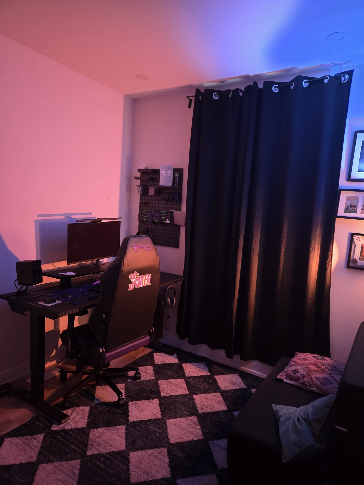
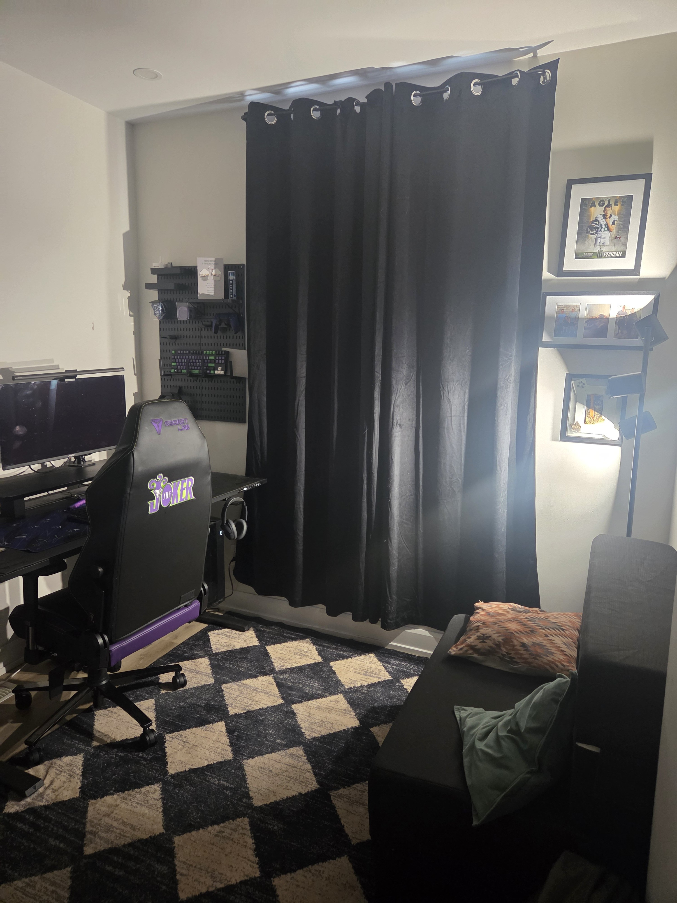
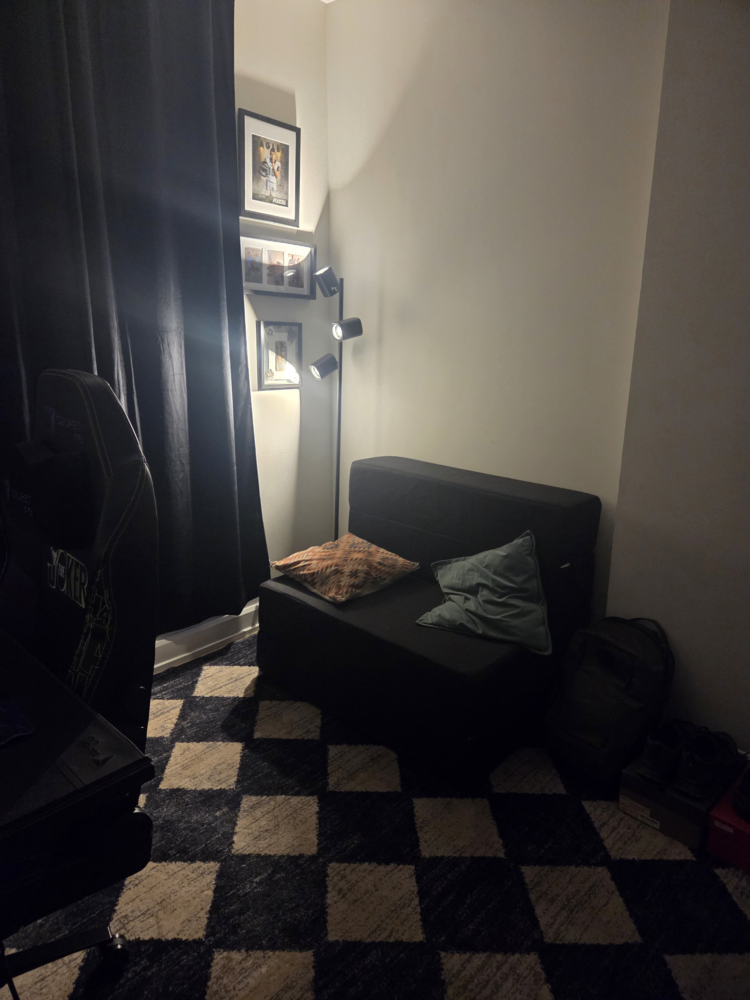

The Strong Season
A weekly look at the systems that actually keep me working, housed, and clean. This week: a strong stretch, a harder season on the roof, and the long-term thinking I never used to be capable of.
This is the first of these. The idea is simple: once a week, I review the week — not as a journal, but the way you'd review a system. What held, what's under strain, what I'm keeping an eye on. The big essays here are about the system from the outside. This is the same lens turned on my own week. Some weeks it'll be three lines. That's fine. The point is showing up to it.
A strong week, a harder season
Good week. The season's turned physically harder, though — we're all shinglers on the crew right now, and I'm the one laboring for them. Carrying, feeding the roof, keeping everyone supplied so the job moves and we all get to go home.
That's my strong point, honestly. I'm strong, I'm athletic, I'm less technical than the guys laying shingle — so I'm the muscle that makes the day efficient. It's appreciated. And still, some days it makes me feel inadequate, like I'm the less-skilled one. Both of those are true at the same time, and I'm trying to just let them be true instead of picking a side.
The thing I'm keeping an eye on
There's a worry I clocked this week: that I just keep working like this, and then I age, and I lose the capacity that's my whole contribution. I know the fear is a little irrational in the way I tend to run it — that it's either exactly how it is now, or I'm completely old and broken with nothing in between.
But there's a middle ground, and naming it is the point. Role deviations. Subcontracting. Sales. Ways the work changes shape as I do, instead of just running until something breaks. I'm not making a plan this week. I'm just refusing to pretend the only two options are "now" and "ruined."
The systems that did the work
Recovery's steady. I don't fantasize about using — that solution doesn't even read as something that would take the stress away anymore. I don't enjoy thinking about drinking or using. That's not willpower, that's just where the wiring's landed after a while, and I don't take it for granted.
The bigger thing this week is the working out, because it shows how much has changed. I'm consistent and I'm sustainable with it now. I'm not all-in. I take easy days, rain days, Saturdays and Sundays off, and I don't beat myself up about it.
That's the whole difference. For about a decade it was a sawtooth — I'd train hard for a year while I was healthy, then relapse, then use, then go to jail, then come out and do the exact same thing again. Intense, then gone. Now it's just steady. Content. Longer-term. The workouts aren't really the story; the story is that I finally believe there's a long term to plan for.
Home stuff
Watched my son's football game — he scored a touchdown. Then I came home and did the kind of small ordinary things that still don't feel ordinary to me: installed a new floor lamp, took down the cheap blinds that never fit right and put up proper ones, ordered a shoe rack and a hanger for my room.

Here's the part I don't usually say out loud. This is the first place I have ever designed. The first place where I bought everything in it, picked everything in it, saved for it, organized it myself. I've spent my whole life in other people's places — shelters, communal living, rooms in houses that belonged to someone else. I never once got to do this.
So the lamp and the blinds aren't really about the lamp and the blinds. Every single thing in this room is something I chose. That's the same shift as the workouts, just in furniture — building the place out a piece at a time instead of all at once or not at all, proper blinds instead of the ones that don't fit. A guy who finally believes there's a long term, furnishing it on purpose.


Chewing on
That middle ground in the trades — what aging out of pure physical labor actually looks like, and whether anyone builds a real off-ramp for guys whose body is the job. Might be a piece in it.